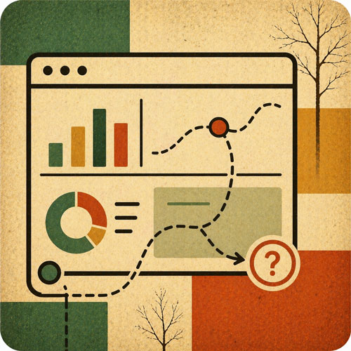
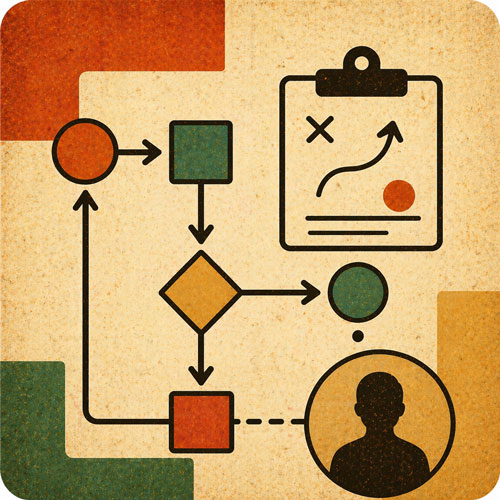

We help teams design and deliver complex digital products, especially those involving analytics, data visualization, AI workflows, or high-stakes decision support. These are short, targeted engagements with clear deliverables.

For teams building dashboards, reporting tools, or internal analytics products
We review your analytics product and identify usability, comprehension, and workflow issues that prevent users from getting value from the data. This is not a visual polish pass. It is a structural review of how information is organized, how decisions are supported, and where users get stuck or misinterpret results.
Your team gets a clear picture of what is working, what is not, and what to fix first—from someone who has spent years building analytics platforms at scale.
For teams presenting data through charts, dashboards, or analytical interfaces
We review your charts, dashboards, or data presentations and recommend clearer visual structures, better hierarchy, and stronger decision support. Good data visualization is not about aesthetics. It is about making the right information visible at the right time so people can act on it.
Users stop misreading data. Decision-makers find what they need faster. Your product earns trust through clarity instead of density.

For teams integrating AI into products or workflows
We help teams think through where AI should support users, how trust should be handled, and how workflow design should prevent confusion or overconfidence. This is especially relevant for products where AI outputs affect decisions, where users need to maintain judgment, or where the line between human work and machine output needs to be clear.
Your AI features support users instead of undermining them. The product earns trust by being honest about what AI can and cannot do.
For teams adding AI to an existing product or workflow
You have a product. You want AI to do something specific inside it. We help you figure out what that looks like, build it, and make sure users can actually work with the output. This is hands-on work, not a deck.
For health systems and medical groups where ambient AI is installed but not delivering
Most ambient AI rollouts fail quietly. DAX or Abridge goes live, adoption stays low, physicians stop using it within 90 days, and nobody can explain exactly why. The tool gets blamed. The real problem is almost never the tool.
A findings report and remediation plan with enough specificity to act on without us in the room. Fixed-scope discovery audit, two to three weeks.
For teams who want honest outside eyes before something ships—or after it lands wrong
Most products do not fail because the team lacked talent. They fail because no one with outside experience looked at the thing honestly before it shipped. This is a single, fixed-scope engagement. We spend 60 to 90 minutes tearing down your product, dashboard, or data interface. You get a written report and a recorded walkthrough. No ongoing commitment, no retainer, no follow-up pitch.
$1,500 to $2,500 depending on product complexity. Fixed fee. Delivered in five business days.